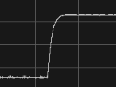
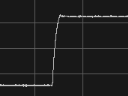
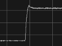

Pixel Overdrive is a technique typically used to improve Pixel Response Time in gaming monitors. The basic idea is that if a pixel needs to transition from a value A to a brigher value B, it will transition more quickly if we overshoot B for a short time (or undershoot it if B is darker than A). Excessive overdrive creates inverse ghosting artifacts, visible as trails or halos around moving objects.
The following pictures show a transition between two dark shades of grey on the same display with different overdrive settings (X axis is time, Y axis is brightness):
| No overdrive | Medium | Strong |
|---|---|---|
|  |  |  |
| Notice the long transition | Notice the much faster transition | Notice the spike during the transition, this is visible to the user |